TUTORIAL PALTALK
INSTALAR PALTALK.
1-) Entramos en la web http://andaluzsoy.webcindario.com/ en la seccion yahoo y descargamos el Paltalk y lo instalamos.-
2-) UNA VEZ INSTALADO......Aparecerá en su escritorio varios iconos, solo utilizará este….
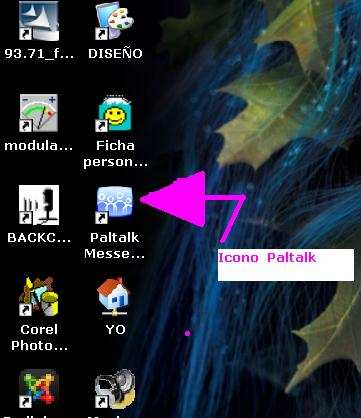
3-) REGISTRARSE CON SU NICK DE AQUÍ…….. Para registrarse, cliquear donde marca la flecha…
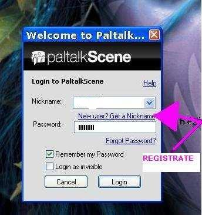
4-) HACERTE TU NICK DE USUARIO DE PALTALK. Es sencillo, se rellena los datos (y una cosa copiar y guardar, su contraseña, y su pregunta secreta y contestación a esa pregunta), ES IMPORTANTE...copiarla. En algunas ocasiones, el NICK que queres usar esta ocupado, puede ponerle una rayita o números, hasta que le acepte como nuevo usuario... Es el motivo de que algunas veces no deje registrarse, es que ya existe ese usuario.
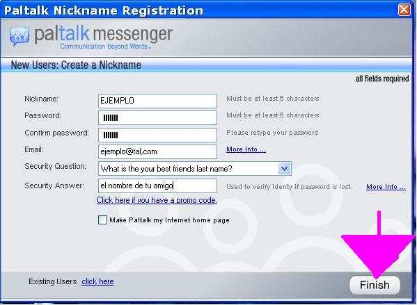
5-) YA ERES UNO MAS EN PALTALK…………. Ya eres un miembro de paltalk con tu nick y tu contraseña, como le indico en la imagen puede elegir su estado, si se pone INVISIBLE, no puedes ENTRAR EN SALAS, De las otras tres maneras si, experimenta. También como ve en la imagen puede crear su propio mensaje, y se pone al lado de su nick cuando estas conectado.
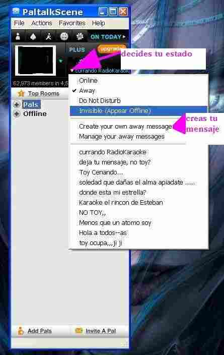
6-) IR A LAS SALAS....¡¡¡¡ por ejemplo en este caso España.- En la imagen muestro como se iría a las salas de España...luego ustedes pueden ir donde quieran... Primero nos dirigimos a EUROPA…….
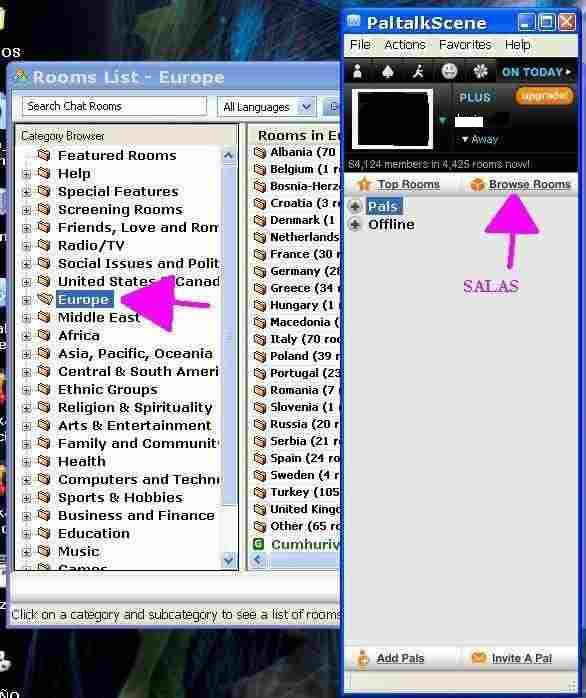
Después a Spain, y ya nos salen las salas que haya en ese momento abiertas, cliquear sobre la que se elija y listo, ya se esta adentro (suponiendo que no sea privada, esas suelen tener al lado un candadito, y se debe tener una contraseña para entrar, por ser salas privadas).
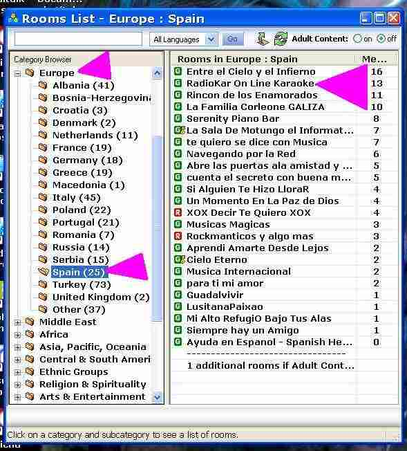
7-) ENTRAMOS EN UNA SALA ... Vamos a visitar una sala, RADIO KAR -Online... En la siguiente imagen ya estamos dentro de la sala, RADIO KAR -Online.- Muestro donde se toma el turno, que es una MANITO.....todos deben respetar su turno y no deben tomar micro hasta que no llegue su turno.- Menos los ADMINISTRADORES, que pueden subir cuando se requiera, siempre por un motivo claro. SE DEBE RESPETAR A LOS @ ADMINISTRADORES, SON LOS ENCARGADOS DE VELAR POR LA TRANQUILIDAD DE LA SALA, ELLOS SON LOS RESPONSABLES DE ESA SALA, ANTE LOS ADMINISTRADORES JEFES DE PALTALK. En la imagen también se muestra como se añaden amigos desde una sala, mas adelante enseñare a añadir amigos desde fuera de la sala sabiendo solo el NICK del amigo.
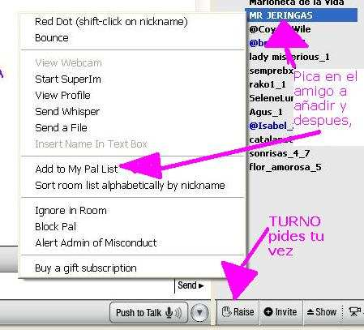
8-) TOMAR EL MICRO CUANDO LLEGA SU TURNO.
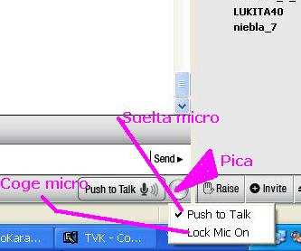
9-) INVITAR A UN AMIGO QUE SE CONECTA A LA SALA EN LA QUE SE ESTA.
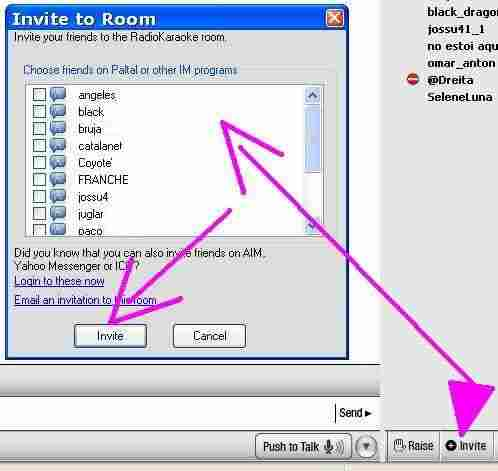
10-) MEMORIZAR EL TAMAÑO DE LETRA Y EL COLOR DE LA MISMA Y MUTE EL RING (timbre) PARA NO OIRLO.
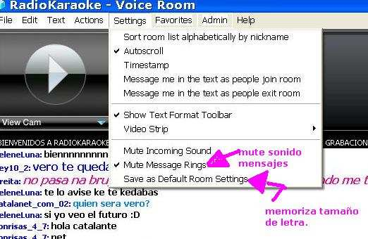
11-) MEMORIZAR LA SALA EN LA QUE SE ENCUENTRA, COMO FAVORITA.
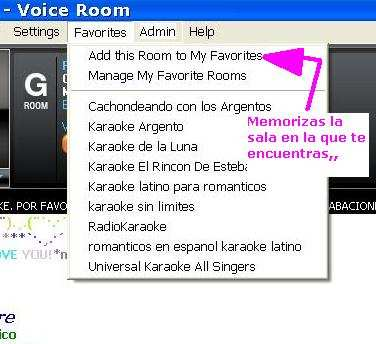
12-) DESDE LA VENTANA DE COMIENZO SE PODRA LLEGAR A SUS SALAS FAVORITAS.
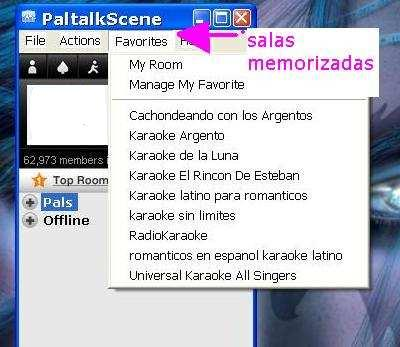
13-) DONDE ESTAN SUS AMIGOS?? .. ESTAN CONECTADOS O DESCONECTADOS??...COMO AÑADIR AMIGOS DESDE FUERA DE UNA SALA. '
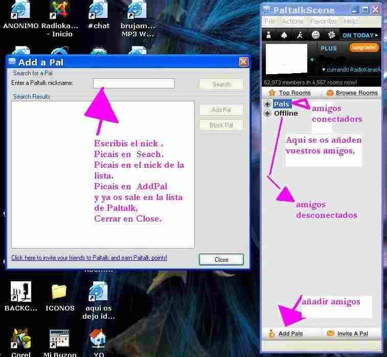
14-) COMO BLOQUEAR, BORRAR, O HABLAR EN PRIVADO CON AMIGOS.
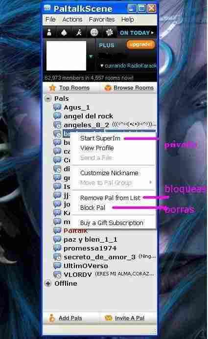
15-) PARA HABLAR EN PRIVADO CON UN AMIGO DESDE DENTRO DE UNA SALA ES IGUAL QUE DESDE FUERA.. (((( Star Super Im ))) 16) EXISTEN CUATRO TIPOS DE NICK. NEGROS......usuarios normales/gratuitos no ven cam. AZULES........usuarios de pago, si ven cam. VERDES……usuarios de pago, si ven cam. MORADOS...usuarios de pago, si ven cam.
17) CONDUCTA EN LAS SALAS.
Hay usuarios que son policía de paltalk, que pueden ser de cualquier color, son administradores generales, que velan por el buen funcionamiento del programa, y pueden estar en cualquier sala a cualquier hora, por lo cual, es recomendable comportarse….o….SE PEDE LLEGAR A SER BANEADO (expulsado) DE POR VIDA.
Los Administradores, son aquellos que tienen la letra @ (arroba) al lado del Nik, ya sean administradores dueños de una sala o administradores adjuntos, puestos como ayudantes por el dueño de la sala.
Las @ Administradores, si su comportamiento no es el adecuado…pueden…ignorarlo con un PUNTO ROJO, y no saldrá en sala lo que escribe, ni podrá tomar el micro, ni nada... Podrán echar a cualquiera de la sala durante 24 horas, y no se podrá entrar a esa sala...o....ponerle en una lista y no podrá entrar NUNCA JAMAS a esa sala nuevamente.
***************************************************
FUNCIONES DE PALTALK
Uso letra grande para los que tienen problemas de vista, terminos Ingléses en un color y en Español en otro para que sea más fácil.
En la ventana principal de PaltalkScene, encontramos las siguientes opciones:
File=Archivos. Actions=Acciones. Favorites=Favoritos. Help=Ayuda.
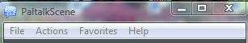
1.File Setup Preference=Ajustes básicos.Este apartado se merece una página aparte. Al lado izquierdo, en el navegador se encuentra. Desde aquí se configuran: (trabajando en ello).
Open Recivied Files=Abrir archivos recibidos. Los archivos que reciba via Paltalk están alojados en My Received Files en tu Pc. Con está opción entrará directamente donde están ubicados. Tell a friend about Paltalk=Hablarle a un amig@ sobre Paltalk.
Puede enviar un Email con información sobre este Programa. Paltalk Home=Página principal de Paltalk. Descargar las dos versiones de Paltalk y encontrará: Members=Miembros. Usuarios.
Aquí encontrará los nicks y fotos de usarios, puede entrar a sus perfiles. Chat Rooms=Salas.
Las páginas de las Salas e información sobre ellas. Download=Bajar.Para bajar el Programa. Express (Beta) Puede usar Paltalk sin necesidad de bajarse el programa. Está recomendado para los que no quieren bajarlo, usan otro pc diferente al propio, usuarios de Mac.
La versión PaltalkScene no funciona con Mac. My account=Mi cuenta. Varias opciones: My suscriptions=Mis subscripciones. Las salas en las que soy miembro.
Para hacerse Miembro de una sala, tiene que clickear en el nombre de la sala cuando esté dentro, en la parte superior del chat, escrito en azul. Al clickear se entra en la página de la sala, elige la opción Join this group, le pedirá que escribas tu nick y contraseña. Al hacerlo será
Miembro de la Sala. Manage my group=Manejar mi grupo. Editar la página de su sala. Tiene varias opciones. Change my password=Cambiar mi contraseña. Update My Email Address=Actualizar mi Email. Update My People Profile=Actualizar los perfiles de usuarios. Aqui podrá ver las actualizaciones que han hecho recientemente. Paltalk People=Gente de Paltalk. Para ver los perfiles y fotos de usuarios. Paltalk e Store. La tienda de Paltalk, productos de la casa. Music. Página de Rhapsody para escuchar y bajar música. Música gratis, videos, descargas, compras, letras y fotos. Download the latest version of PaltalkScene. Para descargar la última versión de Paltalk,actualizar. Upgrade Video=Actualizar video. Desde aquí puede comprar un nick de color y poder disfrutar de más ventajas. Cada color tiene un precio:
Nick Negro. Gratis.Nick Azul. 1 año $39.95. Un mes $3.33 Nick Verde. 1 mes $14.95. Un año $59.95 un ahorro del 65%. Nick Purpura.VIP 1 año $199.95
Close Pal list=Cerrar la lista de Pal. La pantalla se cierra pero no el programa, queda minimizado. Exit PaltalkScene.Cerrar completamente el programa.Salir.
2. Actions.
Change my Status=Cambiar mi estado. Aquí podemos cambiar nuestro estado de conexión y escribir un mensaje personalizado al lado de nuestro nick. Online=Conectado,Away=Ausente, Do Not Disturb=No Molestar, Invisible,en invisible no podremos entrar en las salas. Show others the room I'm in= Mostrar a otros la sala en que estoy.Si elíge esta opción, aparecerá el nombre de la sala en la que me encuentro. Sus conctactos podrán entrar en la sala clickeando en el nombre de la sala. Create a coustum Message=Crear un mensaje personalizado. Puede escribir varios mensajes y elegir uno cuando se conecte. El mensaje aparace al lado de su nick.
Reset to no message=Resetear mensajes. Borrarlos.
Manage your costum message=Manejar tus mensajes.
Podrá elegir el mensaje a mostrar o borrar alguno con Removed Seleted Message=Borrar mensaje seleccionado.
3. Favorites.
My Room=Mi Sala. Para entrar a su sala como administrador (Anfitrión).
Join my Room=Disfrutar de mi sala. Para entrar.
Ediy my Room=Editar mi sala. Para editar los datos, cambiar el nombre, cambiar mensajes de bienvenida, etc... Manage My Favorites Rooms=Manejar mis Salas favoritas. Primero explicaré como se añade una sala a favoritas, cuando entre a una sala, en la parte superior del chat está el nombre de la Sala en azul, debajo está Add to my favorites, clickear y queda añadida. Cuando entra en esta opción, aparece una ventana donde están los nombres de las salas agregadas, tiene dos opciones: Join elected Room=Disfrutar de la Sala elegida. Puede entrar directamente a la Sala sin tener que buscarla en el Directorio. Removed Seleted Room=Remover Sala seleccionada. Borrar de la lista de favoritas.
4. Help
Customer support=Atención al cliente. Goto an Online Help Room=Ir a una Sala de ayuda. Paltak Tour.Video Tutorial para Paltalk, está en Inglés pero ayuda mirarlo.
About PaltalScene=Sobre PaltalkScene.
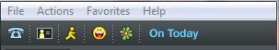
En la ventana principal, en la parte superior, encontraremos varios Iconos: Icono teléfono azul, encontrará las tarifas para llamar desde el Pc a teléfonos fijos. Cuadradito negro con silueta amarilla, se abre la página con los perfiles y fotos de los usuarios de Paltalk. Icono muñeco amarillo, para instalar Ask toolbar, para chatear con otros servicios de mensajería,
AIM, Yahoo messenger, ICQ. Icono para Yahoo messenger. Icono flor verde para ICQ. On today=Paltalk hoy. Podrá ver las salas que emiten, fotos nuevas de usuario y más información.
Esta ventana se abre al iniciar Paltalk.
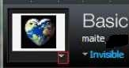
Pantalla para poner foto, desde aquí se puede controlar varias cosas: Change my display picture,para cambiar la foto, esta no figura en su perfil pero si en los chats privados IM. Varias opciones: Select from one of my profile=Seleccionar una foto de de mi perfil,puede subir varias fotos a su perfil.
Take a webcam snapshot=Tomar una instantánea desde la webcam.
Add a photo from my computer=Añadir foto de mis archivos.
Manage my pictures=Manejar mis imágenes. Puede manejar sus fotos cargadas en el perfil.
Remove display photo=Quitar foto.
Create or Modify My Profiel=Crear o modificar perfil. Para crear el perfil.
Recuerde que Male=Hombre, Female=Mujer. Manage my Acount=Manejar mi cuenta. Puede cambiar su dirección de Email=Change Email. Change Password=Cambiar contraseña, Enabler nickname security=Activar seguridad para el nick,si alguien pretende entrar con su nick desde otro Pc, tendrá que responder a una pregunta secreta.
Recomiendo activar esta opción. Create or Modify My Chat Room=Crar o modificar la página de Sala. Cada Sala tiene un perfil con foto, comentarios, imágenes, lista de Miembros.
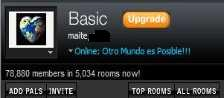
Debajo de Basic y el nombre de usuario hay una pestaña (flechita). Aquí puede poner su estado de conexión, activar el mensaje personalizado, mostrar a otros en la sala que está y manejar los mensajes. Podrá leer la cantidad de usuarios que hay conectados y las salas que están abiertas.
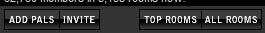
ADD PALS=Añadir contactos, escriba el nick del usuario, Search=Buscar, luego Add. En el caso que desée bloquearlo use la opción Block Pal=Bloquear usuario. En la parte inferior izquierda en azul y subrayado está para invitar a sus amigos a usar Paltalk por Email. Al finalizar cerrar en Close. INVITE=Para invitar a los amigos a usar Paltalk y ganar puntos. TOP ROOMS=Información de las Salas Top. Las que más Miembros tienen agregados. ALL ROOMS=Todas las Salas. Directorio de Salas.
El Directorio está organizado por zonas geográficas y temas.
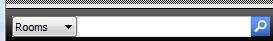
En la parte inferior de la ventana principal tiene la opción de búsqueda rápida de usuarios y salas, Room=Sala, Member=Usuario, escriba el nick o el nombre de la sala, clickear en la lupa.
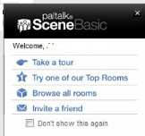
En la ventana principal se encuentra otra pequeña ventana que dice: Paltalk Scene Basic, Take a tour Try one of our Top Rooms, Browse all Rooms, Invite a friend. Recomiendo quitarlo para poder ver mejor los contactos, se hace tildando en el cuadradito que hay en la parte de abajo y cerrandola con la X. No volverá a aperecer.
ENTRAR EN LAS SALAS.
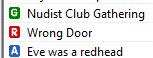
Hay salas con diferentes contenidos, verá antes del nombre de la sala un símbolo con una letra y un color:
G En verde, sala para todos los públicos. No está permitido lenguaje de adultos. R Enrojo, sala con lenguaje y contenido para adultos. No están permitidos los desnudos. A En azul, sala con contenido para adultos, desnudos permitidos. Estas salas solo aparecen en el directorio si tiene activado, Adult Content=Contenido para adultos.Está en el extremo superior derecho.
5. Directorio.
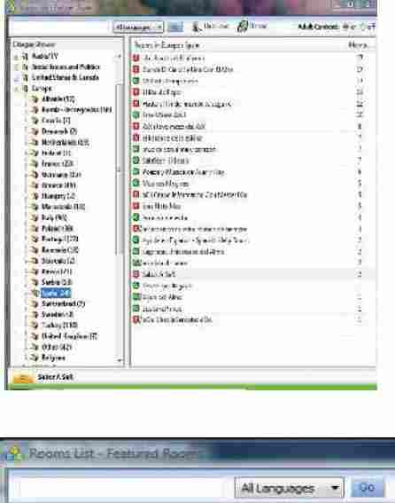
La manera más rápida de encontrar una sala o un tema en particular es en Search Chat Rooms=Buscar Salas,esto se encuentra en la parte superior izquierda, de la ventana del Directorio, escribe el nombre o tema, elige el idioma y luego pulse Go=Ir. Saldrán los resultados de la búsqueda.
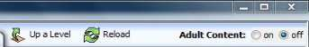
En la parte superior del Directorio se puede ver: Up a Level=Subir un nivel. Cuando está viendo salas en subcategorías, con esto puede volver a la categoría.
Por ejem: Está viendo una sala de Spain y quiere volver a Europe.
Reload=Recargar.Para refrescar la página, la cantidad de salas y participantes se actualiza. Adult Content=Contenido para adultos. Activando en On aparecerán en el Directorio las salas A. Se abrirá una ventana advirtiendo sobre el contenido de las Salas, y preguntando si eres mayor de 18 años. Estas salas se pueden encontrar en cualquier categoría.
Categorías. Subcategorías.
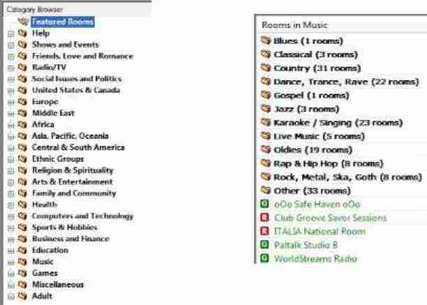
El directorio está organizado por zonas geográficas y temas, estos están organizados por categorías, y subcategorias. Estas figuran así:
Zonas geográficas
Help=Ayuda.Puedes encontrar las salas de ayuda en todos los idiomas.
Shows and Events=Show y Eventos. Talk=Charla.Salas de charla y las salas de Paltalk.
Friends, Love and Romance=Amigos, Amor y Romance.Estas están en las siguiente subcategorías:
20s veinteañeros, 30s treintañeros, Flirting=Coqueteo,Gays/Lesbians/Bi=Gay y Lesbianas y Bisexuales, International=Internacional, Just Friends=Solo amigos,Teens1317=Adolecentes entre 13 y 17 años, Young Adults=Jovenes adultos,40s and 50s=Gente entre 40 y 50 años,Seniors= Gente de la tercera edad.
Radio/TV.Salas de charla y emisiones de Radio en directo. Salas de Paltalk
Social Issues and Politics=Asuntos Sociales y Política.Las siguientes subcategorías: Government & Politcs=Gobierno y Política,Human Rights=Derechos Humanos,Military=Militares. Ethnic Groups=Grupos Etnicos.Las siguientes categorías: AfricanAmerican=Afroamericanos, Hispanics=Hispanos, estos son Hispanos que viven fuera de sus países. Kurdish=Kurdos,Native Americans=Nativos Americanos.Indigenas Americanos de diferentes sitios de USA. Religion & Spirituality=Religión y Espiritualidad.Las siguientes subcategorías: Astrology=Astrología, Atheism=Ateísmo, Buddhism=Budísmo, Christianity=Cristianísmo, Interfaith =Interconfecional,Islam, Judaism,Metaphysical=Metafísica, Spirituality=Espiritualidad. Arts & Enterteinment=Arte y Entretenimiento. Family and Community=Familia en Comunidad. Las siguientes subcategorías: Guns=Armas, Home and Gardening=Hogar y Jardineria,Perenting=Cuidar de los hijos.Health=Salud. Subcategorías: Beauty=Belleza, Fitness & Nutrition=Fitness y Nutrición, Peer Support=Ayuda a pares, Traditional Medicine=Medicina Tradicional, Overcoming Addiction=Superando la adicción.Computers and Technology=Computadoras y Tecnología.Sports & Hobbies=Deportes y Hobbies.Economy and Finance=Economía y Finanzas.. Music=Música. Las Subcategorías: Blues, Classical, Country, Dance, Gospel, Jazz, Karaoke/Singning, Live Music, Oldies, Rap & Hip Hop, Rock. Games=Juegos. Puedes jugar Online con otros usarios, hay variedad de juegos: Backgammon, Billar, Cartas, Ajedrez, etc... Miscellaneous=Miscelanea.Adult=Adultos. Al abrir este apartado aparecerá una ventana para advertir sobre el contenido de las salas, para mayores de 18 años. Aceptar y se abrirá esta parte del directorio.
6. Ventana del chat de la sala.
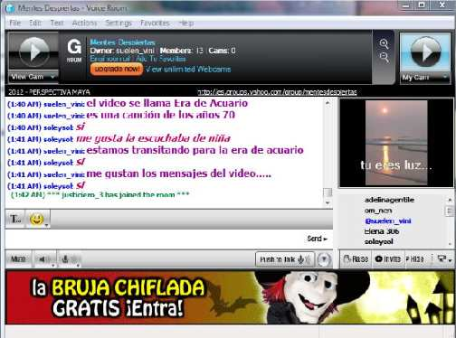
Participar en una Sala.
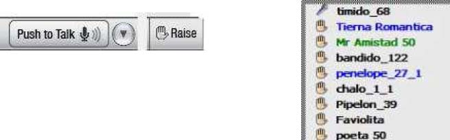
Lo primero que voy a explicar es como participar en una sala: Para hablar, primero hay que pedirlo, esto se hace con una mano, la mano está debajo de los nicks de los participantes. RAISE=Levantar, donde está dibujada una mano. Tiene que esperar su turno para hablar. Verá el dibujo de un micrófono al lado del nick de la persona que está hablando, cuando la persona deja de hablar, deja de verse, ese es el momento para pulsar Push to talk=Pulsar para hablar, puede tener pulsado o hacerlo con la tecla ctrl de su Pc. Para evitar esto y usar el manos libres, en Push to Talk verá una pestaña (flechita) donde encontrará el manos libres,tildando en Lock Mic On=Asegurar el micrófono en On, esto le permite escribir o controlar los mandos para poner música. Cuando termine de hablar suelte el botón o en caso de que use el manos libres vuelva a pulsar Push to Talk.
Hay que respetar los turnos. Séa breve en sus exposiciones, sobre todo si hay gente esperando. Cuando dos personas al mismo tiempo tratan de tomar el micro, sale una pared de ladrillo dibujada.
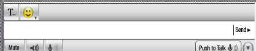
Puede elegir el tipo de letra, tamaño y color que usará en el chat escrito. Al lado izquierdo del chat junto al emoticono está una letra T, desde aquí se puede hacer. Para escribir en el chat. Justo debajo del emoticono está donde se escribe, al lado derecho verá Send=Enviar. Sonido. Debajo de donde se escribe verá Mute=Silenciardesde aquí puede silenciar el sonido de la sala, también puede bajar el volúmen desde el dibujo de un altavoz (parlante), bajar el volúmen del micrófono, desde el dibujo del mismo.
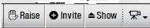
Invite=Invitar. Esta opción está justo al lado de la mano. Desde aquí puede invitar a tus contactos a unirse a la sala, al pulsar se le abre una ventana con los nombres de sus contactos que están Online, tilde y luego pulse invite. Ellos recibirán la invitación. Cuando reciba una invitación verá una pequeña pantalla con el nombre de la sala y persona que le invita, tiene la opción de aceptar, rechazar ó bloquear a quien le invita. Show=Mostrar. Para ver los videos que ponen en la sala, cuando está activado cambie a Hide=Esconder.
Puede quitar la pantalla de video en cualquier momento.
Desde el dibujo de una cámara puede elegir el tamaño para ver la pantalla de video. También se puede hacer haciendo click sobre la pantalla de video, se abrirá un pantalla que se puede ampliar. Si nó puede ver los videos que ponen los anfitriones en la sala es que no tiene instalado el Adobe Flash Player. Ver arriba a la izquierda en el botón Ver videos en sala. Haga clic en la imágen de Adobe y entrará directamente a la página oficial, podrá descargarlo desde ahí.
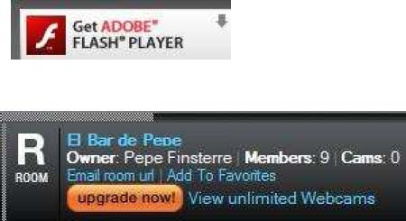
En la parte de superior del chat, verá el nombre de la sala, la cantidad de participantes y número de cámaras activas. La letra R es del tipo de sala. Email room url=Enviar url de la sala por Email. De esta manera puede invitar a alguien a participar de la sala sin necesidad de descargar el programa. Add To Favorites=Añadir a favoritas, añadiendola a sus favoritas podrá entrar directamente, sin buscarla en el directorio, solo acceda a Favorites en la ventana principal. En naranja dice upgrade now, es para pasar a forma de pago donde podrá ver un número de cámaras ilimatado=View unlimited Webcams. Cuando clickeas en el nombre de la sala entra a la página de la sala. Le anímo a hacerse miembro de sus salas favoritas. Join this Group=Participar de este grupo.
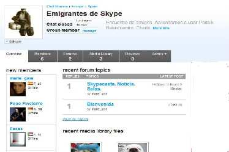
File, Edit, Text, Actions, Settings, Favorites, Help. Desde la ventana del chat tiene diferentes funciones.
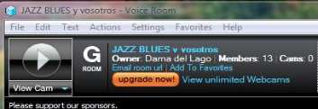
File.
Se puede guardar lo escrito en el chat de diferentes maneras:
Save Room Session=Guardar la sesión del chat, con esto se puede guardar todo lo escrito en el chat, algunos administradores lo usan cuando tienen que dar explicaciones sobre la expulsión de algún usuario, sirve como prueba del comportamiento del usuario en la sala. Se puede guardar de dos manera:
Save as RTF=Guardar en Formato de texto enriquecido. Queda en el WordPad, se archiva tal como sale en el chat con emoticonos, colores, todo.
Save as text =Guardar como texto. No salen los detalles, queda archivado en Documentos.
Print Room Session= Imprimir la sesión de chat. Para enviar directamente a la impresora.
Show Room Statistics=Mostrar estadísticas del chat. Verán el nombre de la sala, categoría...
Exit Chat Room=Salir de la sala. Normalmente se hace desde X.
Edit.
Siguientes opciones:
Cut=Cortar.
Copy=Copiar.
Paste=Pegar.
Text. Para elegir el color y tipo de letra, la misma función de la T.
Actions.
Están juntas varias opciones:
Instant message to a Pal=Enviar un privado. Primero hay que clickear en el nick del usuario. Se abre la ventana para chatear en privado. Invite Online Pals to this session=Invitar a contactos conectados a esta sala. Se abre una ventana donde se tildan los elegídos, finalizar con Invite. Recibirán la invitación. Raise Hand=Levantar la mano. Petición para hablar. Try video=Ver video. Cuando alguien tiene activado el video, clickear en el nick antes. Esta función también puede hacerse clickeando directamente en la cámara que se quiere ver. Upgrade to Unlimited video=Actualizar para ver videos ilimitadamente. Comprar nick de color. Show video viewer=Mostrar pantalla de video. Para un video de la sala. Push to Talk=Lock mic on. La misma función del botón.
Settings.
Aqui vienen algunas opciones tildadas por defecto. Si quiere que en el chat salga la hora, quien sale y quien entra de la sala, hay que tildar las siguientes opciones:
Timestamp=Imprimir hora. Mostrar a que hora se escriben los chats. Esta opción es bueno tenerla marcada, especialmente los anfitriones.
Messege me in the text as people join room= Mostrar cuando alguien entra a la sala. Color verde.
Messege me in the text as people exit room= Mostrar cuando alguien sale de la sala. Color marrón.
Además si se tiene tildado para ver la hora, se verá a que hora entra y sale alguien.
Favorites.
Add this Room to My Favorites= Agregar esta sala a mis favoritos.
Manage My Favorites Room=ManejarCustomer Support=Atención al cliente.
Go to Help Room=Ir a sala de ayuda.
7.Varios.Clikear en el nick de un usuario.
Clikeando en un nick tiene muchas opciones, enviar un privado, ver perfil, enviar un privado (IM)... Hay un par de diferentes opciones de cuando se clickea desde la pantalla principal a cuando se hace en el chat de una sala. Primero explico las opciones desde la pantalla principal y abajo pongo las otras que se encuentran desde el chat de la sala. Con el ratón derecho clickear sobre el nick, aparecerá una ventana con las siguientes opciones:
StartSuperIM=Empezar un privado (IM). Para chatear en privado con otro usuario. View Profile=Ver perfil. Podra ver todo lo que esta persona quiere que sepamos sobre ella, sus gustos músicales, libros, cine, aficiones, cuanto tiempo lleva en Paltalk, fotos, amigos, etc... Cada uno elige que poner, algunos no han editado su perfil. Send a File=Enviar un archivo. Se abre una ventana para selecionar el archivo, luego Send. Make a Phone Call=Hacer una llamada a un teléfono. Se ven las tarifas para llamar a teléfonos.
Manage Phone Call Account=Manejar la Cuenta de teléfono.
Customize Nickname=Customizar el nick. Se puede cambiar la forma en que está escrito, pero nadie puede ver estos arreglos, solo es para sus pantallas.
Move to Pal Group=Mover un usuario a un grupo. Estos grupos aparecen en la ventana principal.
Por defecto vienen varios grupos:
Pals, para gente que se conoce en el programa. Friends=Amigos,Family=Familia,
CoWorkers=Compañeros de trabajo, Other=Otros, Offline=No conectados.
Asi se puede organizar por grupos los contactos, cuando se clickea en el nick y se eliga, Move to Pal Group, se abre una ventana mostrando los diferentes grupos y se elige en cual poner.
También puede cambiar el nombre a estos grupos, personalizarlos ó eliminarlos, clickeando sobre el nombre del grupo, despues lo ampliaré. Remove Pal from list=Borrar un contacto. Block Pal=Bloquear usuario. Cuando alguien le molesta constantemente, lo puede bloquear, ya no volverá a recibir ningún mensaje de esta persona. Buy a Gif susbscription=Comprar una subscripción para regalar. Desde aquí puede comprar y regalar una subscripción para el usuario elegído. Buena idea para un regalo.
Desde el chat de una sala hay estas diferencias:
Send a Whisper=Enviar un susurrro. Se puede enviar un mensaje a un participante de la sala para que lo lea en el chat, nadie más puede leerlo solo la persona elegída. Sort Room list =Ordenar la lista de la sala. Están las opciones: Default Sorting=Ordenar por defecto. Esto viene tildado por defecto. Dejar así. Alphabetically, keeping hands in order raised=Por orden alfabetico, manteniendo las manos en orden. Alphabetically, ignoring raising hands=Por orden alfabetico, ignorando manos.
Ignore in Room=Ignorar en la sala. Para evitar a alguien que molesta.
Alert Admin of Misconduct=Alertar al Administrador sobre mala conducta. Si algún usuario le está molestando o acosando con privados, puede avisar al administrador sobre la conducta de este.
Se hace clickeando en el nick del usuario y elegir esta opción, se abre una ventana donde se puede escribir el tipo de ofensa, el Administrador lo recibirá y tomará medidas.
8Chat Privado.IM.
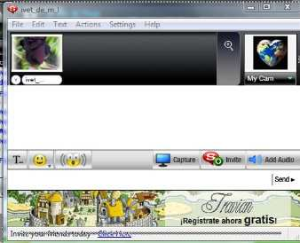
Para mandar un privado a alguien, primero hay que clickear sobre el nick y con el ratón derecho buscar; StartSuperIM=Empezar un mensaje instantáneo,se abrirá la venta del chat privado.
Tiene las opciones de cambiar color y letra, emoticonos. Desde el emoticono que está entre (( )) se envia un zumbido, un sonido fuerte de aviso al otro usuario, desde Filey en Setup Preference,buscar en Alerts and, Sounds=Alertas y sonidos,está Nudge Sound que tiene tres sonidos diferentes ó la opción de silenciarlos en Mute Nudges,tildando aquí. Los tres sonidos son:
Car Honk=Bocina de coche Fog Honk=Bocina Barco, sonido de niebla.Monkey=Sonido de Chimpancé.
En Capture se puede hacer una captura de pantalla, se elíge cualquier gráfico ó documento que tenga en pantalla, elegir un punto y abre una ventana capturando la imágen que se quiere. Se abre una ventana que da estas posibilidades:
Send to Pal=Enviar a usuario. La imágen le llega sin que tenga que aceptar nada ni mandar archivo. Debajo está el nombre de usuario y una pestaña donde puede elegír otro usuario para enviar.
Save image=Guardar imágen. Se abre una pantalla para guardar en el archivo que eliga. Capture again=Volver a capturar. En el caso de error ó querer mandar otra captura.
Nota: De esta manera capturé las imágenes de este tutorial.
Invite=Invitar. Se envia la invitación a participar del IM (privado) a más usuarios, un total de 10. Se puede hacer una multiconferencia con estos, hablar al mismo tiempo sin necesidad de pedir el micrófono, ver los videos de todos y chatear por escrito. Una excelente opción.
Add Audio=Añadir audio. Al pinchar aquí le llega al otro usuario una petición que debe aceptar o rechazar. Aceptando podrá hablar.
File, Edit, Text, Actions, Settings, Help. En la pantalla del privado (IM).
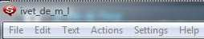
File.
Save IM Convertation=Guardar la conversación privada, con esto se puede guardar todo lo escrito en el chat. Se puede guardar de dos manera: Save as RTF=Guardar en Formato de texto enriquecido. Queda en el WordPad, se archiva tal como sale en el chat con emoticonos, colores, todo.
Save as text =Guardar como texto. No salen los detalles, queda archivado en Documentos. Print IM onvertation= Imprimir la sesión de chat. Para enviar directamente a la impresora. Close Conversation=Cerrar Conversación. Cerrar el IM, se puede cerrar en X.
Edit.
Cut=Cortar.
Copy=Copiar.
Paste=Pegar.
Text.
Las mismos opciones que en la letra T. Elegír color y tipo de letra.
Actions.
Invite Online Pal to this IM Conversation=Invitar a usarios conectados a este privado.
la misma opción del botón Invite. Audio On=Sonido activado.Tak Mode=Modo de hablar. Start My Webcam=Encender mi cam. Esto se puede hacer desde mi pantalla de video, en la parte inferior en la pestaña (flechita). Más detallado en mi cámara de video. Upgrade to Unlimited Video=Para comprar nick de color. View profile=Ver Perfil.Se abre una ventana con el perfil del usuario. Se puede entrar para ver Photos=Fotos, video, etc... Tambien aparece escrito debajo de la foto Profile=Perfil, pulsando se entra a ver más detalladamente el perfil. Remove this Pal from my Pal List=Borrar este usuario de mi lista de contactos. Block Pal=Bloquear usuario. Capture Screen=Captura de pantalla. Igual que en Capture.
Settings.
Algunas cosas del mismo apartado en otras ventanas, con una diferencia, la opción Mute Message Rings=Silenciar sonidos de mensajes.
Help.
Customer Support=Atención al Cliente. Go to Help Room=Ir a Sala de Ayuda.
9Usar las cams.
Cams en Sala.
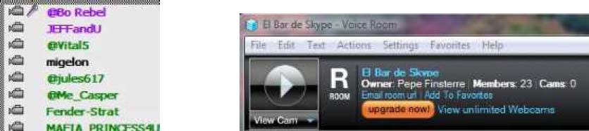
Cuando se quiere ver una cam en sala, hay que clickear sobre el dibujo de la cam, se podrá ver en la parte superior izquierda del chat. Los nicks negros (gratis) solo pueden ver unos segundos la cam, hay un truco para poder volver a verla, se hace clic en la pantalla donde se vió con el ratón derecho, luego esperar casi 2 minutos y se podrá ver esa misma cam. En el visor de la cam en sala hay una pestaña debajo, desde aquí se puede elegir la cam que se quiere ver. Los nicks de color pueden ver ilimitadamente las cam. Haciendo click en el visor se puede ampliar el tamaño de la pantalla. Se puede ver pero no tiene audio.
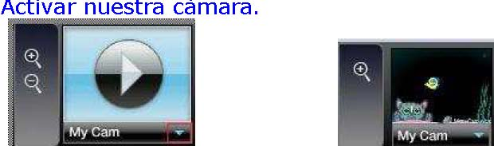
En la pestaña inferior aparece Start My Webcam=Activar mi cámara web. Al pulsar se abre una ventana donde elegir la cam que se quiere activar, saldrá un aviso, aceptar. Luego se abre una ventana donde configurarla, si nó se sabe hacerlo, dejarlo como viene por defecto, aceptar y se activará.
Una vez activada hay varias opciónes: Stop My Webcam=Parar mi cámara web. Webcam Overlays=Superposiciones para la cámara. Se pueden elegír fondos divertidos, aparte de salir su imágen saldrá algo divertido, se puede usar solo el fondo. (Ver imágen de arriba) Existe un programa para efectos y fondos divertidos. Manycam. Más información en el apartado de truquitos cosas divertidas, arriba a la izquierda. Change my Display Picture=Cambiar la foto a mostrar. Se encuentran varias opciones para hacerlo:
Select from one of my profile pics=Seleccionar una de las fotos de mi perfil. Take a webcam snapshot=Tomar una instantánea desde mi webcam. Add a photo from my computer=Añadir una foto de los archivos de su computadora.
Manage my pictures=Manejar mis imágenes. Remove Display picture=Eliminar la imágen de la pantalla. Send a Picture=Enviar imágen. Se puede enviar una imágen al otro usuario. Hay dos opciones:
Open Pictures Directory=Abrir archivos de imágens. Se puede elegir una imágen de los archivos.
Recently send pictures=Imágenes enviadas recientemente. Aquí se encuentran las imágenes enviadas recientemente ó limpiar en Clear all recently send pics=Limpiar imágenes enviadas recientemente.
Hay unas lupas al lado de mi cam, con esta lupas se puede agrandar la pantalla, pinchando en la pantalla se abre otra pantalla donde se puede ver a pantalla completa.
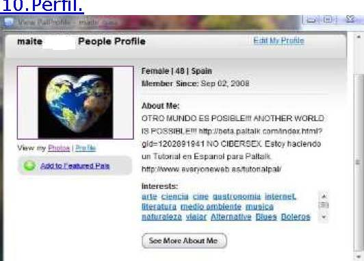
Para ver el perfil de un usuario hay que hacer clic sobre en nick con el ratón derecho, elegir View Profile=Ver Perfil. Se abre una ventana con lo más básico, para ver más información del usuario, haga clik en Profile, debajo de la foto ó en See more about me=Ver más sobre mí, en Photos se puede entrar al álbum de fotos del usuario. Si quiere agregar el usuario a sus amigos, pulse en Add to featured Pals,se abre una ventana para hacer un comentario que le llegará al usuario, al aceptar quedará agregado a la lista de amigos. Send Friend Request=Enviar petición de amigo.
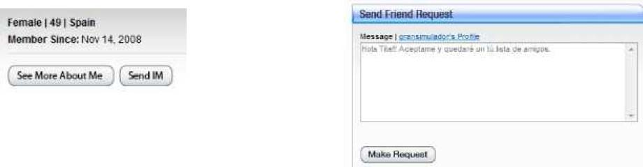
Dejar un mensaje ó comentario.
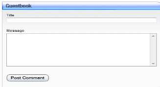
En Guestbook=Libro de visitas,se puede dejar un comentario o nota en el perfil del usuario. Escribir y para enviar pulse en Post Comment.
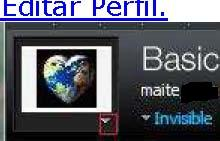
Se puede editar el perfil desde varios sitios donde figure Edit Profile=Editar perfil, voy a explicar como se hace desde la ventana principal. Debajo de la foto, en la pestaña (flechita) hay la opción, Create or Modify My Profile= crear ó modificar mi perfil. Se abrirá una ventana para hacerlo. (imágen de abajo).
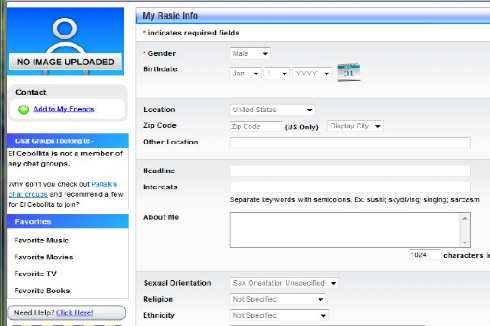
Rellenar el cuestionario.
Gender=Género. Aquí se pone el sexo. Male=Hombre, Female=Mujer. Birthday=Fecha de nacimiento.Mes, día, año. Location=Localización. Figuran todos los países. Recuerde que Spain=España. Zip Code=Códigoo postal. Sólo para los habitantes de USA. Other Location=Otra localidad. En el caso de no encontrar el nombre de su ciudad, escribir aquí.
Headline,para escribir un mensaje, en mi caso tengo Otro Mundo es Posible!!! Interests=Intereses.Escriba sus intereses y hobbies, separados por una coma. About me=Sobre mi. Ponga los comentarios que quiera sobre usted. Sexual Orientation=Orientación sexual. Hay varias opciones:
Sex Orientation Unspecified=Orientación sexual no especificada. Heterosexual, Gay/lesbian,
Bisexual. Religion. Salen casi todas las opciones. Ethnicity=Etnia.Languague=Idioma. Spanish Castilian=Español Castellano. Iam seeking=Estoy buscando. Para especificar que se busca en Paltalk, amigos, romance, etc... Para asegurar los datos, pulsar Submit.
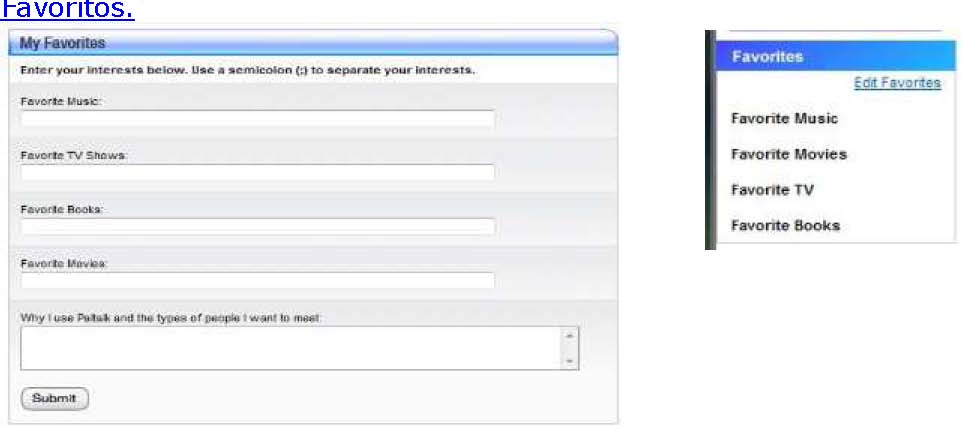
Los favoritos se pueden editar desde las dos opciones que muestro arriba en las imágenes. Escriba su música, programas de TV, Books=Libros, Movies=Peliculas. Hagalo separando con una coma. Para terminar Submit.
11.Fotos. Imágenes.
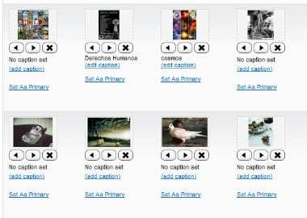
Agregue imágenes en su álbum. Para elegír cual saldrá en en perfil, Set As Primary.Con las flechitas se puede cambiar la posición de la imágen en el álbum. Con la X borrar.
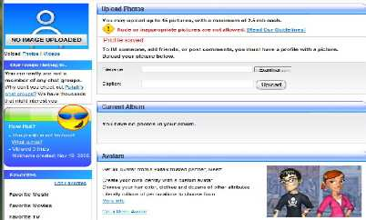
Upload Photos=Subir fotos. Para subir pulse en examinar, se abrirán los archivos de la computadora, elegír, titular la imágen en Caption, y terminar con Upload=Subir.
12Abrir Sala.
Hay varias maneras de abrir una sala:
Privada. Solo pueden entrar los usuarios que hayas elegído ó que inviten estes usuarios elegidos. Esta no figura en el directorio.
Privada con clave para entrar. Solo pueden entrar los que dispongan de la contraseña. Sale en el directorio con el dibujo de una llave en amarillo. Pública.Para todos los usuarios.
A continuación paso a explicar paso a paso como hacerlo.
1Sala Privada. No sale en el Directorio.
En la ventana Principal en Actions, buscar Create Private Room=Crear una sala privada.
Se abre una ventana donde se elíge los contactos, al enviar la invitación se abre la ventana del chat de la sala. Se puede seguir invitando, incluso por email, la invitación llega por email y pueden entrar aunque no tengan bajado el Paltalk, usando en Paltalk Express. En esta sala no hay Administrador/es.
2Sala Pública. Cuando se abre por primera vez se puede elegir si es Pública o Privada. Más detalles más adelante.
Ir a la ventana principal, Actionsy Create a Chat Room=Crear una Sala. Se abre una ventana, haga Click en Create My Group. Ver imágen de abajo.
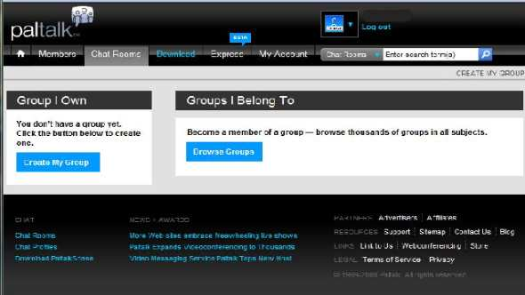
Al hacer clic en Create My Group,se abre otra ventana donde se elíge la opción Free=Gratis, haga clic en OK. Las otras opciones son para nicks de pago. La salas salas gratis tienen una capacidad de 200 usuarios. Deluxe 500 usuarios, Ultimate 1.000 usuarios.
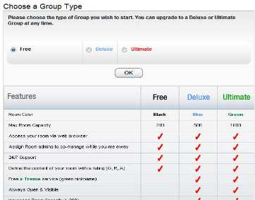
En la ventana siguiente.
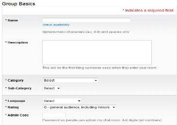
Rellenar los siguientes datos:
Name=Nombre de la Sala. No poner punto, tildes, comas.... sólo letras y números. Description=Descripción.Esto saldrá en le chat de la sala, cuando entre un usuario es lo primero que leerá. Explique el tipo de sala y las normas que se quieran poner. Category=Categoría. Se elíge una zona geográfica, ó un tema. Ejem: Europa, Spain. SubCategory=SubCategoría.En este caso Spain. Ver las diferentes opciones.
Languague=Idioma. Spanish Castilian=Español Castellano.
Rating=Clasificación. Según lo que desee, G para general, incluidos menores. R Lenguaje de adultos permito. A Lenguaje de adultos permitido y desnudos permitidos. Admin Code=Código de administrador.Este código es para los @ de la sala. De 4 a 9 números.
Keywords=Palabras clave. Use palabras clave para que la busqueda sea más fácil. Ejm: Charla, Música, Amigos. Palabras que defínan el ambiente de la sala.
Es importante terminar con Save My Changes=Guardar cambios.
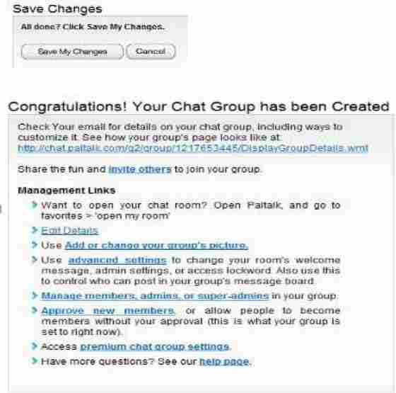
Saldrá una ventana felicitandolo. En Azul está el link de su sala, el que puede enviar por Email para invitar a su sala, lo puede pegar en cualquier chat de otros servicios.
Más abajo y en azul están: Edit Details=Editar detalles. Add or change your group's picture=Añadir ó cambiar la imágen de la página de la sala. Advance Settings=Ajustes Básicos.Manage members, admins, or superadmins=Manejar miembros, administradores ó superadministradores. Approve new members=Aprobar nuevos miembros. Premium chat group settings=Ajustes para las salas Premium.
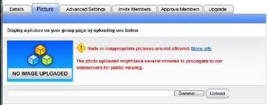
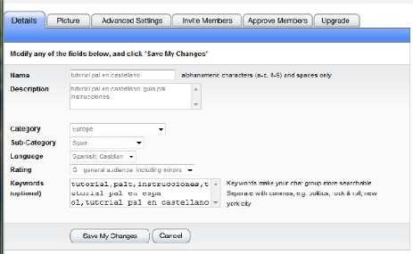
Con esto ya se tiene una buena idea de que es el programa Pal Talk y sus funciones.
SALUDOS
Andaluzsoy